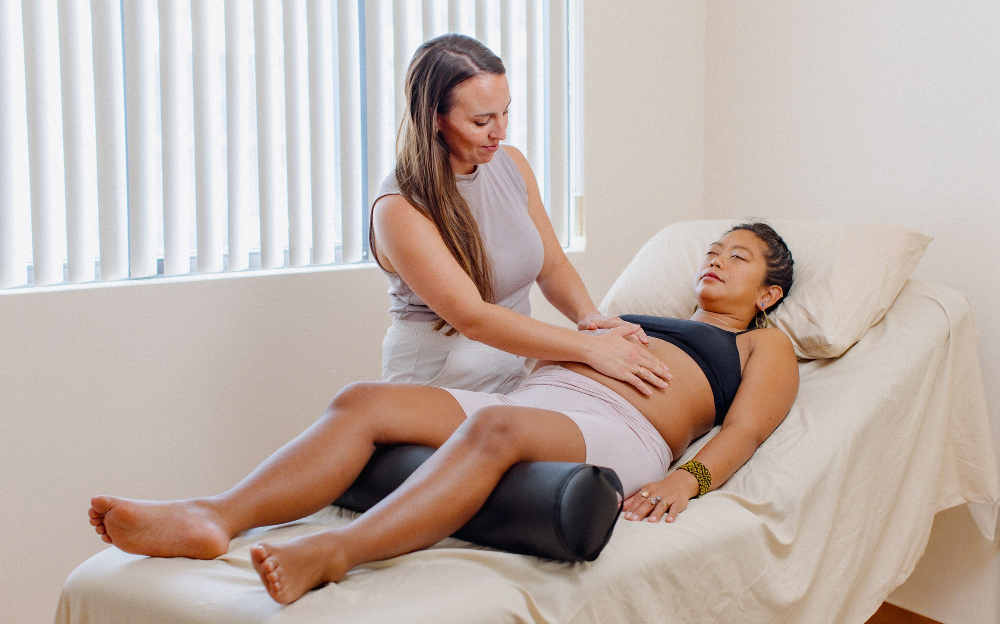
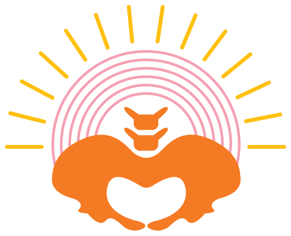
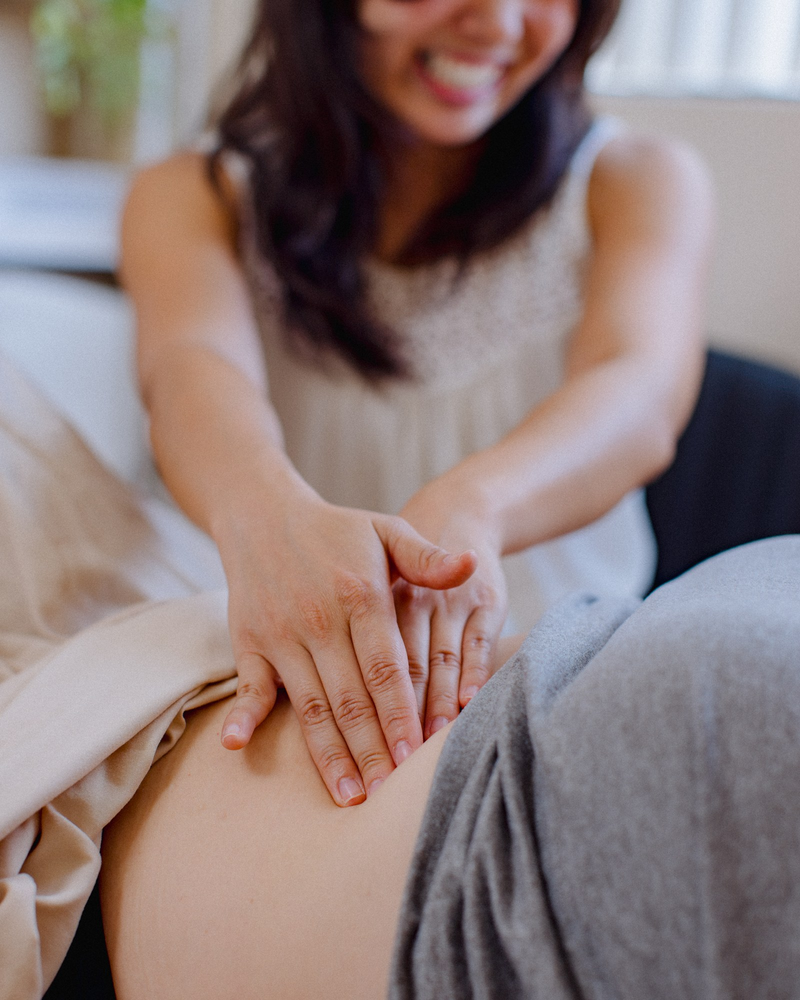
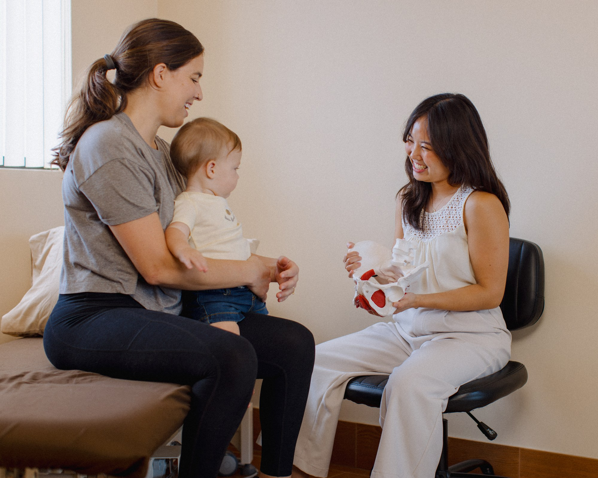
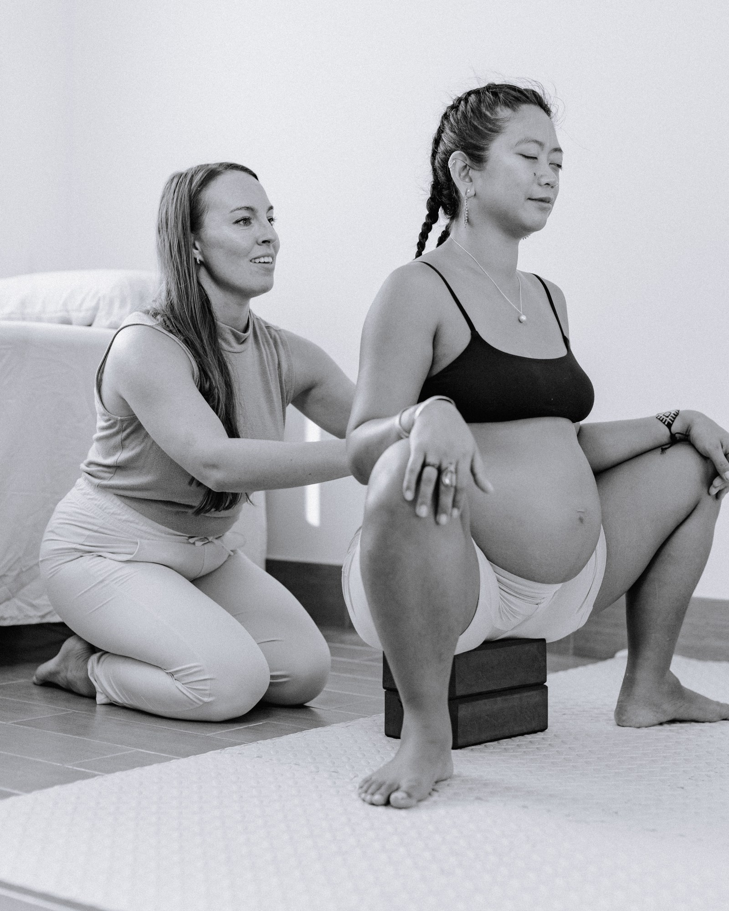
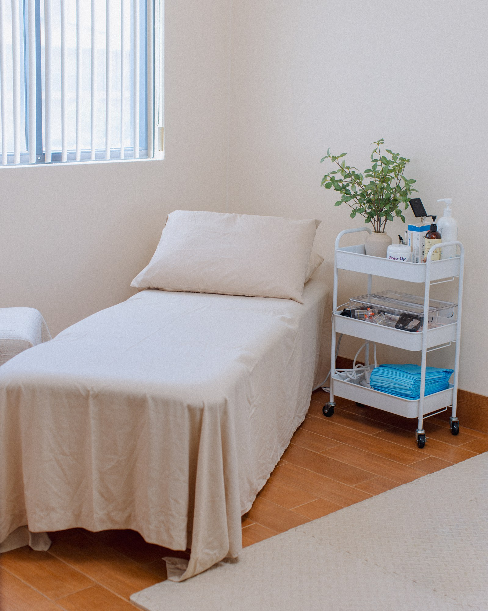
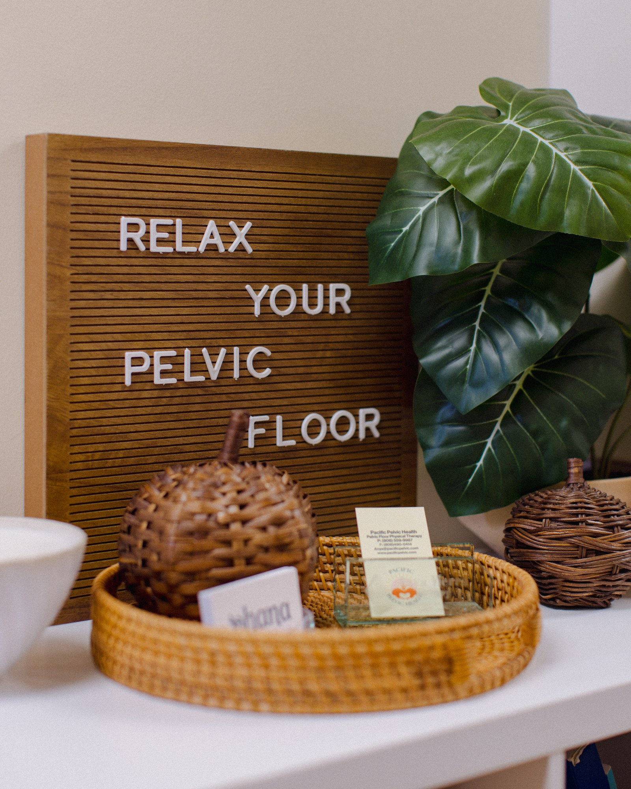
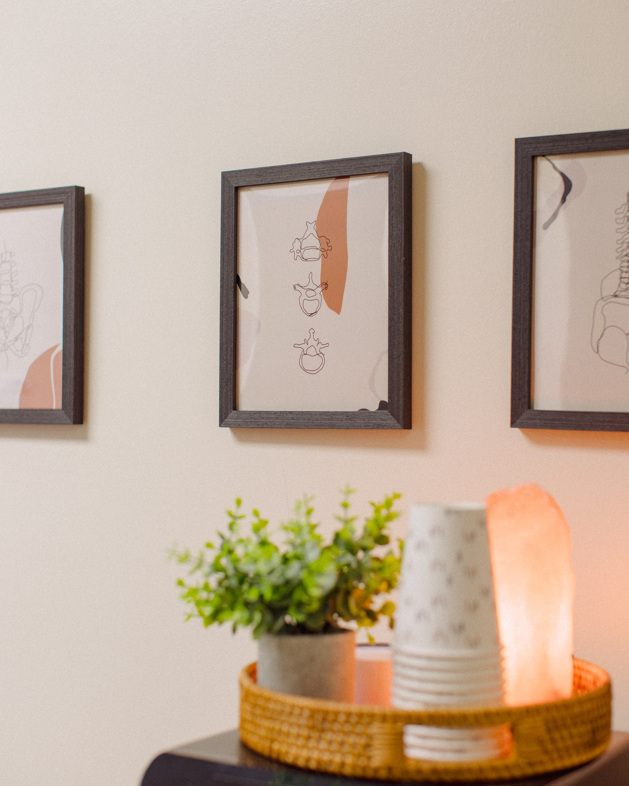
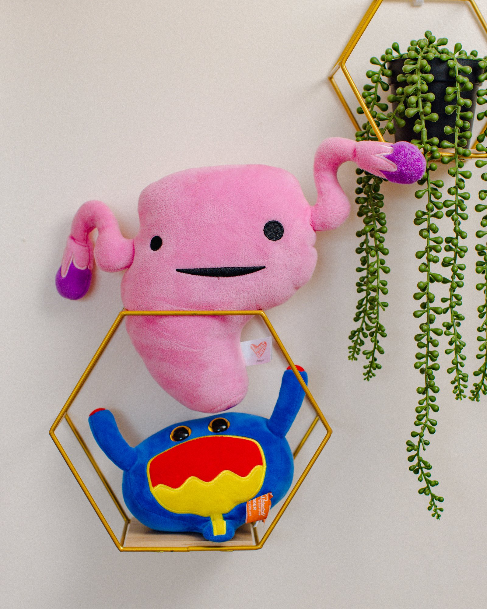

01 · In clinic
Maui pelvic floor physical therapy
The ideal choice if you are on Maui, HI and experiencing pelvic floor issues. Specialized and individualized pelvic floor physical therapy in a calm and therapeutic environment.

Pacific Pelvic Health
Lasting relief in your symptoms and resiliency in your body — so you can stay active in your lifestyle, communities, and with your family.

Your care team
Feel heard. Have time. Tap a portrait to read more about Anya and Keely — the pelvic floor specialists guiding your care in clinic and online.
We facilitate individualized healing for people struggling with pelvic floor issues — lasting relief in symptoms and resiliency in the body, so you can stay active in your lifestyle, communities, and with your family.
We know what it’s like to feel vulnerable, fearful, and unheard. Our mission is to ensure you feel like the leader of your care team, while we take a supportive and guiding role where it’s needed.
In-clinic care in Central Maui, with 1:1 online pelvic floor wellness coaching when you can’t come in.
Work with us

01 · In clinic
The ideal choice if you are on Maui, HI and experiencing pelvic floor issues. Specialized and individualized pelvic floor physical therapy in a calm and therapeutic environment.

02 · Online
Struggling with pelvic floor dysfunction, but unable to come into clinic? An option if you’ve tried pelvic floor therapy near you and didn’t get the improvements you’re looking for, want to fill in the gaps, or are just getting started.
What we treat
Pelvic floor physical therapy for bladder and bowel concerns, pelvic pain, pregnancy and postpartum recovery, prolapse, orthopedic pain, post-surgical rehab, menopause, and male pelvic health.
Leakage, urgency and frequency, overactive bladder, incomplete emptying, retention, and interstitial cystitis.
Chronic pelvic pain, pain with intercourse, vaginismus, pudendal neuralgia, endometriosis-related pain, and more.
Birth preparation, pelvic girdle pain, leakage, diastasis recti, scar discomfort, and return to exercise after birth.
Vaginal heaviness, pressure, or bulging — with strategies to manage pressure and return to activity with confidence.
Constipation, incomplete emptying, straining, fecal urgency or incontinence, and pelvic floor dyssynergia.
Hip and back pain, post-surgical pelvic rehab, menopause-related changes, and male pelvic health.

Whether you’re a runner, surfer, weightlifter, or simply want to keep up with your kids — we help you return to the activities that matter most, symptom free and stronger than ever.
What’s included
Every appointment is spent one-on-one with your pelvic floor physical therapist. No double-booking, no aides, and no distractions — just dedicated time focused on you, your concerns, and your goals.
Patient voices
The space
Appointment-required care at 405 Ala Makani Street in Kahului, in the office building connected to The Underdog Foundation — a calm, therapeutic environment designed so you can settle in.




Visit
Contact us for an appointment — in-clinic physical therapy or 1:1 online pelvic floor wellness coaching.
FAQs
The state of Hawaii is an unrestricted Direct Access state, meaning a patient may receive physical therapy without a referral from another healthcare provider. If it is felt your condition is outside a physical therapist’s scope of practice, a referral will be made to the appropriate healthcare provider.
No, an internal examination is not always required. It depends on your specific condition, symptoms, and your comfort level. We will discuss the need for internal examination with you and ensure your comfort and consent prior to one being completed.
Follow-up visits typically are 60 minutes. Frequency of visits is recommended by your therapist at the initial evaluation. Typically patients are seen once per week to start and will taper as you are improving.
At Pacific Pelvic Health we provide one-on-one care without limitations from health insurance companies and without being passed down to an aide. Anya has her Doctorate in Physical Therapy, is a Certified Strength and Conditioning Specialist, and has received her pelvic health rehabilitation certifications from the Herman and Wallace Institute — with a hands-on approach, education on your body and its anatomy, and a plan guided to meet your goals.